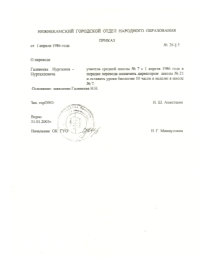
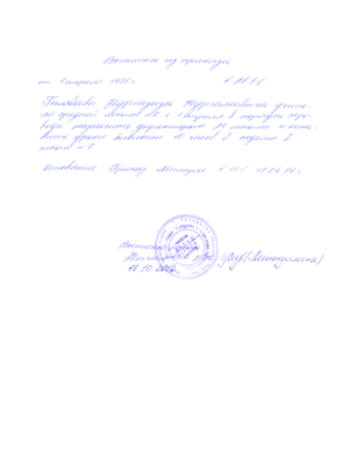
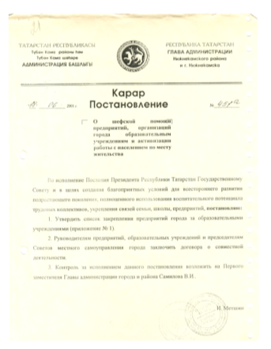

О нашей школе
Содержание
Введение
Школа - это путь к знаниям и открытиям. Мы сравниваем её с большим кораблем, который уходит в плавание каждый год с первого сентября и продолжает свое плавание в течение года. За тридцать два года школа совершила очень много таких путешествий. За этот жизненный путь произошло много разных перемен…
Школа - это самое замечательное время в жизни человека. Самые лучшие воспоминания в памяти человека - это воспоминания о школе. Меня зовут Екатерина. В этой школе я учусь с первого класса, сейчас я в 10 классе. За всё это время со мной случались разные ситуации, но я никогда не думаю плохо о школе, а наоборот, вспоминаю только самое хорошее и светлое.
Актуальность:
Актуальность исследовательской работы заключается в первую очередь в том, что вместе с историей школы, мы пишем и историю своего города. Во-вторых, каждый ученик должен знать историю школы, в которой учится.
В настоящее время многие родители начали заботиться и говорить вслух, в какую школу пойдёт их ребёнок. Сейчас времена меняются, меняются люди и во многих школах происходят значительные изменения в лучшую сторону. Перед каждой семьёй встаёт задача в выборе школы. И на следующий год перед моими родственниками встанет такая же задача, и этот выбор остановится на школе № 21.
К большому сожалению, я не знаю историю своей школы. На мой взгляд, каждый уважающий себя человек должен, да и не просто должен, а обязан знать историю школы, в которой учился или учится. Я помню что недавно в школе был большой праздник. Тогда школе исполнилось 30 лет. И я подумала… а что интересно было тогда, давно… И поставила перед собой цель: составить странички летописи школы, представляющие преемственность поколений, найти новые интересные факты истории школы. На примере архивных документов и фотоматериалов Совета ветеранов педагогического труда показать вклад школы в образовательную деятельность города.
Объектом исследования является школа: педагогический коллектив, учащиеся, родители.
Предмет исследования является вклад всех ее участников в формирование имиджа школы.
Задачи:
- пронаблюдать динамику создания истории школы по годам;
- обратиться к материалам архивного фонда и воспоминаниям сотрудников школы, работающие в разные периоды;
- изучить документальные и фотоматериалы архива совета ветеранов педагогического труда;
- собрать информацию истории школы, истории деятельности комсомольской ячейки, о руководителях школы №21, ветеранах педагогического труда и медалистах школы;
- восстановить связь с учителями, когда-то работавшими в школе и с выпускниками школы;
- рассказать об исторических событиях в жизни школы одноклассникам, как жила школа до нас, составить презентацию и сформировать фотоальбом из материалов личных архивов учителей.
Глава I. История МБОУ «СОШ № 21»
§ 1. С чего все начиналось.... 1985 год
Школа - свет прожектора, который освещает нам жизненный путь, показывает направление, по которому нужно идти, чтобы развиваться, становиться лучше.
Школа - это открытая книга, кто-то читает её внимательно, кто-то не запоминает, что в ней написано. Сколько бы лет не было школе, она всегда юная, молодая. Мне кажется, что школа с грустью провожает каждый свой выпуск и с радостью встречает новый. Наша школа - это любимый дом, придя в который тебя встретят с любовью и лаской.

Решение исполкома №230 от 24.04.1986
С развитием 20-го микрорайона в городе Нижнекамск назрела необходимость строительства культурного очага – образовательного учреждения. В соответствии с народнохозяйственным планом развития народного образования, по решению исполкома городского Совета народных депутатов города Нижнекамск №230 от 24.04.1986 года "Об открытии общеобразовательной средней школы №21" был заложен фундамент под строительство школы. 1 сентября 1986 года Образовательная средняя школа №21 по адресу: улица Мурадьяна 18А приняла 2242 ученика.

Приказ о назначении директором
Руководителем школы был назначен молодой, талантливый учитель - Галявеев Нургазиз Нургалеевич.

Галявеев Нургазиз Нургалеевич, первый директор (1986-2013)
В сентябре 1986 года состоялось первое комсомольское собрание учащихся-комсомольцев и учителей-комсомольцев. На повестке дня стоял вопрос о создании комсомольской организации школы. Комсоргом школьной комсомольской организации была избрана от учителей – Шахмаева Зоя Леонидовна, комсоргом ученической комсомольской организации – Ермолаева Светлана.

Постановление №451а от 18 июня 2001 г.
В 2001 году И.Метшин издал Постановление №451а от 18 июня «О шефской помощи предприятий, организаций города образовательным учреждениям и активизации работы с населением по месту жительства». На протяжении многих лет завод «Окись-этилен» оказывают нам помощь в подготовке к учебному году, в организации различных мероприятий, выездов, экскурсий.

В 1987 году в школе обучалось 100 класс-комплектов, 2602 ученика, 145 учителей
Через год, в 1987 году в школе обучалось 100 класс-комплектов, 2602 ученика, количество педагогических работников составляло 145 человек. Опыт работы по руководству и организации учебно-воспитательного процесса был рассмотрен на Всероссийском семинаре директоров по управлению школой-гигантом.

Вручение Комсомольского Знамени, 1987 г.
В 1987 году в День рождения комсомола – 29 октября, состоялась торжественная линейка, посвященная рождению комсомольской организации учащихся школы №21. В обкоме комсомола в г. Казани было вручено Комсомольское Знамя, которое до сих пор хранится в школе.

Доставка газеты «Ленинская правда» подписчикам
Комитет комсомола школы являлся лидером всех школьных мероприятий и акций. Важные события, мероприятия и праздники начинались торжественным внесением знамени комсомольской и пионерской организации. Яркими мероприятиями, которые остались в истории школы, стали: тимуровское движение; доставление газеты «Ленинская правда» подписчикам 20 микрорайона.

Комсомольский отряд в «Долине смерти»
Комсомольский отряд из учителей-комсомольцев и учащихся дважды совершал поездки в «Долину смерти», под руководством секретаря комсомольской учительской организации Латыповой Лилии Захрамовны и Ковшова Владимира Петровича. По материалам был оформлен школьный уголок «Славы».

Клуб интернациональной дружбы имени Саманты Смит
В городской комсомольский штаб был избран Миронов Алексей, который избрав после окончания школы профессию военного геройски погиб в Чеченских военных событиях. Комсомольская организация школы шефствовала над Нижне Чеченским детским домом. Комитет комсомола школы ярко проявил себя в работе КИДа – клуб интернациональной дружбы имени Саманты Смит. КИД стал победителем среди КИДов города и Республики.

Комсомольский хор, 1988-1990 гг.
С 1988 по 1990 годы школа являлась призерами в городском смотре художественной самодеятельности, основными участниками которого были школьники и учителя комсомольцы: комсомольский хор, драматический кружок Старшеклассников был признан лучшим.

Туристическая команда школы, 1989-1990 гг.
Лучшая команда туристов была создана из числа учащихся-комсомольцев и учителей. В 1989-1990 годы туристическая команда занимала призовые места в городском туристическом слете. Руководитель - Латыпова Л.З.

Трудовое объединение школьников (ТОШ)
Особо отличались комсомольская организация школы в трудовых делах. По итогам 5 летней трудовой четверти и организации Трудового объединения школьников (ТОШ). В 1989-1995 годы ТОШ занимал призовые места в городе.

Школьный музей
90 годы XX века… Перестройка. Изменение. Новые надежды, планы… Упразднение комсомольской и пионерской организации. Утраты традиции и торжества. В нашей школе прошло это время без бурь и митингов. Комсомольская организация, как была Старшеклассниками, так и продолжила свою деятельность и стала именоваться Советом Старшеклассников – первая в городе. Славные традиции комсомола отражаются в школьном музее.

Коррекционные классы, инклюзивное обучение
В 1998 году школа получила лицензию на образовательную деятельность с детьми с нарушениями психофизического развития, это специализированные классы V и VII видов. Опыт работы школы показал, что ежегодно происходит увеличение классов V и VII видов. На основании этого было принято решение об организации Базовой площадкой школу №21 по Инклюзивному обучению в 2015 году.

Постановление №253 от 15.09.2006
С 15 сентября 2006 года (Постановлением исполнительного комитета Нижнекамского муниципального района Республики Татарстан №253 от 15.09.2006 г.) в школе был введен эксперимент по осуществлению образовательного процесса в режиме «Школа полного дня». Экспериментальная площадка работала 3 года.

Утренняя зарядка в школе
В 2010 году Школа удостоена квалификационной характеристики «Школа, содействующая здоровью, серебряного уровня». Каждый учебный день начинается с пятиминутки и выполнения комплекса упражнений «Республиканской зарядки».

Рыцова Гульсирень Камиловна - победитель Гранта «Лучший педагог в области ИКТ», 2012

Вахитова Альбина Вильевна - Диплом "Формула успеха", 2012

Мингазова Елена Викторовна - Лауреат "Учитель года-2013"

Хасаншина Зайнап Закиевна - Грант «Лучший учитель», 2015

Юнусов Марсель Рамилевич - Лауреат конкурса «Классный руководитель - 2017»

Заместитель директора по УР - Грамота за I место в конкурсе «Завуч года», 2017
За время своей деятельности Галявеев Нургазиз Нургалеевич сумел создать успешный, дружный коллектив. Педагоги школы ежегодно принимают участия в профессиональных конкурсах и заслуженно получают награды.

Значок «Отличник народного просвещения», 1992

Почетная грамота Федерации профсоюза, 2001
Нургазиз Нургалеевич осуществляя эффективное руководство, добился значительных успехов в профессиональной, общественной деятельности. Он занимал должность Председателя Совета директоров, заслужил высокого общественного признания. Это Человек – «Золотое Сердце». На протяжении 27 лет являлся директором школы №21. Был отмечен многочисленными наградами.
§ 2. Новая веха в истории школы
В 2013 году на короткий срок пришел новый директор – Махмутов Айзат Гамирович. Тогда я училась в 5 классе. Руководителем он пробыл четыре года. Я хорошо знакома с Айзат Гамировичем, так как он преподавал нам урок географии. Могу уверенно сказать, что этот человек отлично знает свой предмет и преподает его увлечённо и творчески. Айзат Гамирович за время своей работы руководителем школы реализовал муниципальную программу «Безбарьерная школа». Был награжден Благодарственным письмом главы Нижнекамского муниципального района, 2015 году.

Махмутов Айзат Гамирович, 2013 год
В 2016 году наша школа отметила свой 30 — летний юбилей. За эти годы в школе сложился стабильный педагогический коллектив, отсутствует текучесть кадров, 88 % педагогов открывали школу и работают по сей день.

30-летие школы №21, 2016 год
В 2017 году руководство школой принял Сираев Ильнар Рафаилович. Своим новым взглядом на школу он много труда вложил в ее оснащение. И заслуженно получил Грант в конкурсе «Эко - школа». Награжден Грамотой за 1 место в подготовке школы к учебному году.

Сираев Ильнар Рафаилович, 2017 год
За время обучения и воспитания школа сделала 31 выпуск обучающихся во взрослую жизнь.

Первый выпуск школы, 1987 год
Среди выпускников - 32 медалиста. За период введения ЕГЭ все учащиеся успешно сдают государственную аттестацию по обязательным предметам и предметам по выбору.

Медалисты школы
§ 3. Наши ветераны
Великий русский критик Н.А. Добролюбов говорил, что искусство педагога состоит в том, чтобы с высот своей образованности и жизненной мудрости, опираясь на выводы психологии и педагогики, творчески используя их в своей повседневной работе, проникать в самые далёкие галактики детского мира, глубоко и чутко понимать этот мир, побуждать, а не понуждать своих питомцев на овладение знаниями, на добрые дела и поступки. Именно такими были и являются учителя нашей школы. Школа и ее ученики гордятся своими ветеранами, мастерами своего дела.

Федотов Эрнест Кузьмич, учитель технологии, стаж работы – 48 лет.

Шоетова Любовь Петровна, заместитель директора по учебной работе. Награждена нагрудным знаком «Почетный работник общего образования РФ». Стаж работы – 35 лет.

Валиева Завзия Шагизяновна, учитель химии, стаж работы – 36 лет.

Смирнова Валентина Николаевна, учитель технологии, стаж работы – 36 лет.

Новикова Лидия Васильевна, учитель русского языка и литературы, стаж работы – 29 лет.

Митряшкина Надежда Михайловна, учитель математики, стаж работы - 34 года.

Колпакова Галина Федоровна, учитель русского языка и литературы, стаж работы – 49 лет.

Мирсаитова Ильсияр Гарифовна, учитель математики, стаж работы – 42 года. Награждена нагрудным знаком «Почетный работник общего образования РФ».

Морозова Любовь Ивановна, заместитель директора по воспитательной работе, стаж работы - 45 лет. Награждена Значком «Отличник народного просвещения», Нагрудным знаком «Почетный работник общего образования РФ».

Туйкина Асия Миассаровна, учитель математики, стаж работы – 46 лет. Награждена нагрудным знаком «За заслуги в образовании».

Никонорова Марина Владимировна, учитель начальных классов, стаж работы - 35 лет. Награждена нагрудным знаком «За заслуги в образовании».

Ахкиямова Фяридя Биляловна, заместитель директора по учебной работе, стаж работы – 36 лет. Награждена нагрудным знаком «Почетный работник общего образования РФ».

Павлова Тамара Васильевна, учитель математики, стаж работы – 45 лет. Награждена нагрудным знаком «Почетный работник общего образования РФ».

Крылова Людмила Александровна, учитель иностранного языка, стаж работы – 37 лет.

Шишмагаева Нина Николаевна, учитель начальных классов, стаж работы – 42 года. Награждена нагрудным знаком «За заслуги в образовании».
В данный момент, на 1 сентября 2025 года, в школе обучается 536 учащихся, 25 класс-комплектов, 20 общеобразовательных классов ‒ 479 учащихся, 5 коррекционных классов ‒ 57 ученик. В коллективе работает 39 педагогических работников и 5 внешних совместителя.
По изучению и анализу переписи микрорайона школа имеет тенденцию к росту численности учащихся